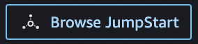

SageMaker JumpStart
SageMaker JumpStart provides pretrained, open-source models for a wide range of problem types to help you get started with machine learning. You can incrementally train and tune these models before deployment. JumpStart also provides solution templates that set up infrastructure for common use cases, and executable example notebooks for machine learning with SageMaker.
You can access the pretrained models, solution templates, and examples through the JumpStart landing page in Amazon SageMaker Studio. The following steps show how to access JumpStart models and solutions using Amazon SageMaker Studio.
You can also access JumpStart models using the SageMaker Python SDK. For information about how to
use JumpStart models programmatically, see Use SageMaker JumpStart Algorithms with Pretrained Models
Open and use JumpStart
The following sections give information on how to open, use, and manage JumpStart from the Amazon SageMaker Studio UI.
Open JumpStart
In Amazon SageMaker Studio, open the JumpStart landing page either through the Home page or the Home menu on the left-side panel.
-
From the Home page you can either:
-
Choose JumpStart in the Prebuilt and automated solutions pane. This opens the SageMaker JumpStart landing page.
-
Choose a model directly in the SageMaker JumpStart landing page, or choose the Explore All option to see available solutions or models of a specific type.
-
-
From the Home menu in the left panel you can either:
-
Navigate to the SageMaker JumpStart node, then choose Models, notebooks, solutions. This opens the SageMaker JumpStart landing page.
-
Navigate to the JumpStart node, then choose Launched JumpStart assets.
The Launched JumpStart assets page lists your currently launched solutions, deployed model endpoints, and training jobs created with JumpStart. You can access the JumpStart landing page from this tab by clicking on the Browse JumpStart button at the top right of the tab.
-
The JumpStart landing page lists available end-to-end machine learning solutions, pretrained models, and example notebooks. From any individual solution or model page, you can choose the Browse JumpStart button (  ) at the top right of the tab to return to the SageMaker JumpStart page.
Important
Before downloading or using third-party content: You are responsible for reviewing and complying with any applicable license terms and making sure that they are acceptable for your use case.
Use JumpStart
From the SageMaker JumpStart landing page, you can browse for solutions, models, notebooks, and other resources.
You can find JumpStart resources by using the search bar, or by browsing each category. Use the tabs to filter the available solutions by categories:
-
Solutions – In one step, launch comprehensive machine learning solutions that tie SageMaker to other AWS services. Select Explore All Solutions to view all available solutions.
-
Resources – Use example notebooks, blogs, and video tutorials to learn and head start your problem types.
-
Blogs – Read details and solutions from machine learning experts.
-
Video tutorials – Watch video tutorials for SageMaker features and machine learning use cases from machine learning experts.
-
Example notebooks – Run example notebooks that use SageMaker features like Spot Instance training and experiments over a large variety of model types and use cases.
-
-
Data types – Find a model by data type (e.g., Vision, Text, Tabular, Audio, Text Generation). Select Explore All Models to view all available models.
-
ML tasks – Find a model by problem type (e.g., Image Classification, Image Embedding, Object Detection, Text Generation). Select Explore All Models to view all available models.
-
Notebooks – Find example notebooks that use SageMaker features across multiple model types and use cases. Select Explore All Notebooks to view all available example notebooks.
-
Frameworks – Find a model by framework (e.g., PyTorch, TensorFlow, Hugging Face).
Manage JumpStart
From the Home menu in the left panel, navigate to SageMaker JumpStart, then choose Launched JumpStart assets to list your currently launched solutions, deployed model endpoints, and training jobs created with JumpStart.
Topics